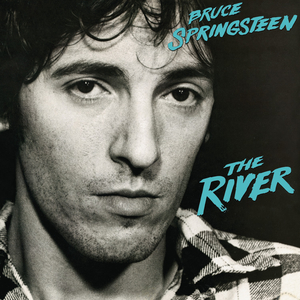

Bruce Springsteen
There can only be one boss...

Highlights of Bruce Springsteen's discography
October 23rd, Bruce Springsteen is releasing his latest album 'Letter To You'. Since debuting in 1973 with 'Greetings from Ashbury Park, N.J.' this marks his 20th studio album. In his live shows, that regularly exceed three hours, he can pick from this large backlog of album tracks. Spectators have created a habit of writing down songs they want to hear on a piece of cardboard. All are hoping their favourite song is being played during the concert. Regularly this includes less well-known album tracks.
Darkness On The Edge Of Town

The River
The Rising
For a complete albun discography, see this overview on brucespringsteen.net